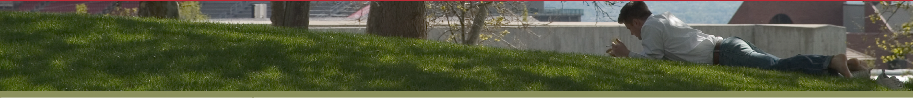

About us
Faculty & staff
Undergraduate Students
Graduate Students
Courses & syllabus
News & announcements
Friends & alumni
Contact us
Campus directory
Department Calendar
Contact Us
Disclaimer
Text only
Webmaster